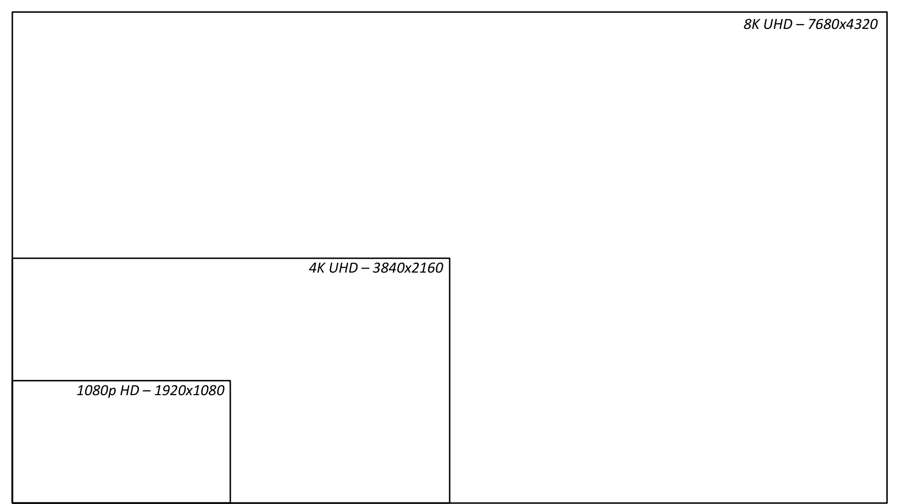
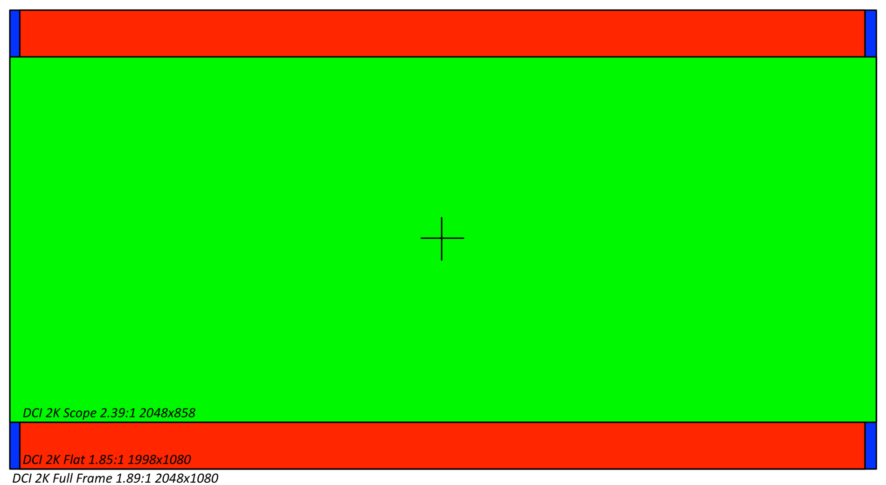
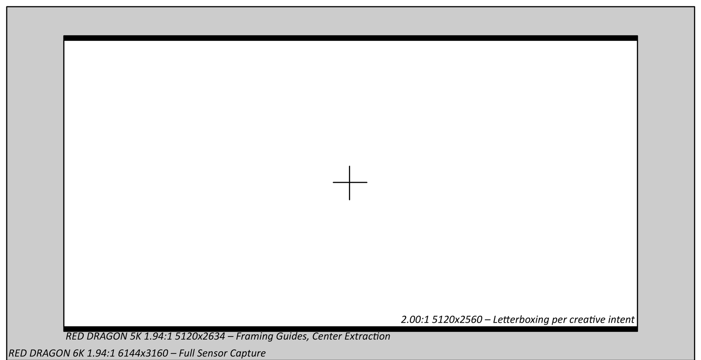
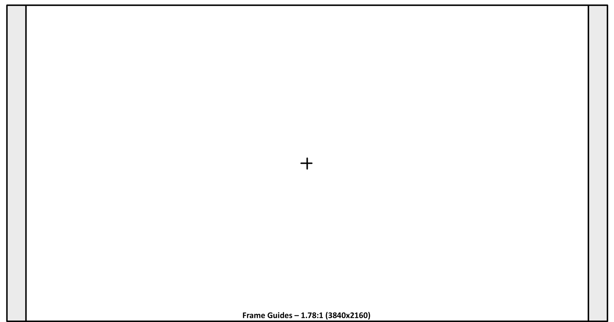
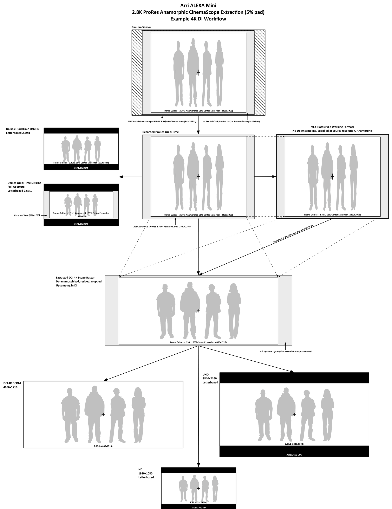
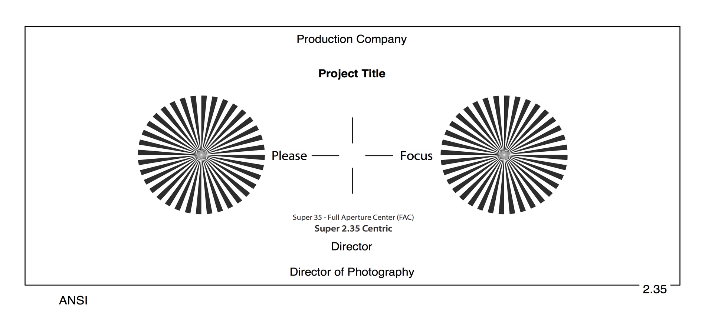
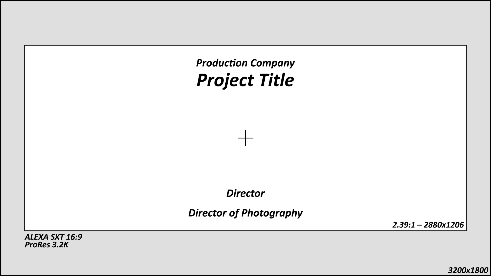
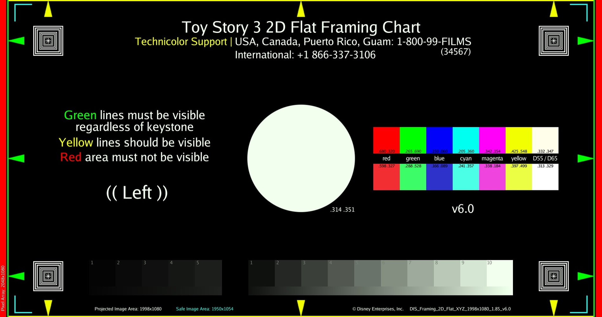

Common Working and Delivery Resolutions
On a given project, there may be multiple camera acquisition formats, each with different resolutions and frame guides for achieving a desired aspect ratio. In distribution, there are often multiple varying container formats.
Camera Original Media
Various cameras by various camera manufacturers record images in a multitude of resolutions, some native sensor resolutions and others downscaled. There is no standard resolution or aspect ratio. Several cameras natively record at 4K DCI Full (4096x2160), but many others record at non-standard resolutions or aspect ratios for a variety of applications. Many cameras will have multiple different recording formats derived from the native sensor format.
Detailed sensor specifications are available from camera manufacturer websites.
Delivery Formats for Video

High-Definition
Most high-definition deliverables are made at 1080p (1920x1080) at 23.976 frames per second. Rarely is feature film content produced at 720p, but some broadcast or cable networks may require it. In most cases the 720p sub-masters are derived from 1080p masters.
1080p HD is 1.78:1 (1.7777:1) or 16x9 aspect ratio; however, letterboxing can be used to produce content in a variety of aspect ratios, most commonly 2.39:1 (CinemaScope) or 2.00:1 (Univisium), which has been a favorite of cinematographer Vittorio Storaro, and of recent independent features — Jurassic World (2015) as well as the Netflix series House of Cards and Stranger Things.
Ultra-High-Definition
The UHD (2160p) standard is prevalent in new consumer television sets and a variety of computer displays — equivalently four times the resolution of 1080p. Movie studios as well as OTT (over-the-top) distributors and content creators are producing films and television content with the goal of concurrent or eventual UHD distribution. In many cases their films are not acquired at 4K or UHD resolutions and are upscaled to UHD, but more recent titles are shot and mastered at UHD or higher resolutions. The UHD equivalent of 4K is 3840x2160 — not truthfully "4K", but it is referred to by many manufacturers as "4K UHD".
8K UHD (4320p) is in its infancy and has seen the most demand in Asia, in particular Japan's public broadcasting organization, NHK.
Delivery Resolutions for Digital Cinema
Digital cinema distribution in theaters follows the Digital Cinema Initiatives' guidelines and specifications for content preparation and delivery.
The DCI 2K image container is a 2048x1080 (1.89:1) signal raster. This aspect ratio and frame size was created to accommodate both Flat (1.85) and Scope (2.39) films.

The DCI 4K equivalents are 4096x2160 (Full), 3996x2160 (Flat), and 4096x1716 (Scope).
The vast majority of films are delivered to theaters at either DCI Scope or DCI Flat resolutions, the exception being IMAX Digital, which utilizes the entire DCI Full container.
Scope
There are some common misconceptions about the "Scope" (CinemaScope) aspect ratio. Depending on who you ask, they may say it is 2.35:1, 2.39:1, or 2.40:1.
Each of these was, at one point, the standardized projector aperture — the metal plate that masks the release print down to the projected area (the negative usually holds a little more picture than the audience ever sees). The history is a sequence of SMPTE standards, not camera-manufacturer decisions:
| Standard | Projector aperture | Unsqueezed ratio (×2 anamorphic) |
|---|---|---|
| PH22.106-1957 | 0.839 × 0.715 in | 0.715 / (0.839 × 2) = 2.347 (≈ 2.35:1) |
| PH22.106-1971 | 0.838 × 0.700 in | 0.700 / (0.838 × 2) = 2.394 (≈ 2.39:1) |
| SMPTE 195-1993 | 0.825 × 0.690 in | 0.690 / (0.825 × 2) = 2.391 (≈ 2.39:1) |
The 1971 revision left the width essentially unchanged and trimmed the height by about 2%. The reason was mechanical, not aesthetic: four-perf anamorphic uses almost the full height between frames, leaving little frameline in which to make splices, so a splice passing the projector gate could flash as a bright band near the top or bottom of the screen. The shorter aperture formalized the projectionists' practice of masking that area — a thicker hidden frameline at the cost of a sliver of picture height. That is the real origin of "2.39," and why "the industry decided 2.39 looked better than 2.35" is misleading.
The 1993 revision was an interoperability cleanup rather than a creative change: it set a common 0.825-inch projected width shared by Flat (1.85, 0.825 × 0.446 in) and Scope, so both formats used the same lateral boundaries while Scope's ratio stayed at 2.39.
So is it 2.39 or 2.40? 2.39:1 is the correct name for the standardized theatrical format. "2.40:1" is a convenient rounding (it also implies an exact 12:5) that spread through framing charts, telecine, and home-video paperwork; it does not name a separate film format. Digital cinema preserves the same shape — DCI 2K / 4K Scope (2048 × 858 / 4096 × 1716) computes to 2.387, still called 2.39 Scope — whereas an HD raster like 1920 × 800 is exactly 2.40 (a genuine 2.40 digital master, but not the historic SMPTE ratio).
And "2.35"? The name stuck as a cultural synonym for Scope and survived the 1971 change. When someone says "we're framing at 2.35" today, they may mean a literal 2.350 (slightly taller than modern Scope) or simply "Scope" while intending 2.39. For restoration and precise delivery the distinction matters — a literal 2.35 extraction is about 1.9% taller than 2.39 (roughly 0.95% more picture top and bottom on a constant-width image); a pre-1971 title was projected around 2.35, a post-1971 anamorphic release around 2.39.1
However today, there is a single digital cinema aspect ratio for super widescreen films, known as DCI "Scope", and its aspect ratio is 2.39:1. Arguably one could frame for 2.35:1 or 2.40:1 and inscribe that within the DCI Scope frame; however, they would need to add pillarboxing or letterboxing to do this, and the difference is only a few pixels. It is highly recommended that if your project may eventually have a life on the big screen, you simply frame and finish at a standard aspect ratio unless the difference is significant.
Online content distribution is a wide open sandbox and any resolution you can inscribe within a standard 1.78 container is technically possible and without detriment, as they will all be letterboxed regardless. However, very few television shows2 have been produced in aspect ratios greater than 2.00:1.
Flat
Feature films that are framed for 1.85:1 theatrical releases are almost always mastered in 1.78:1 (16x9) for home video release. The minor letterboxing has been deemed undesirable by content distributors. To achieve this, many filmmakers maintain the width of the frame and remove cropping on top and bottom to produce the 1.78:1 image. If that is not possible due to image acquisition and mastering constraints, they will maintain the image's vertical framing and crop the sides instead. This should be taken into account when producing visual effects to ensure the final renders are protected for eventual 1.78:1 exhibition.
16x9 Widescreen
16x9, or 1.78:1, is not a standard DCI aspect ratio. Technically a valid DCP can be authored and will be accepted by most DCI servers and projectors. However, traditional movie theaters regularly only have macro configurations for Flat (1.85) and Scope (2.39). These affect the projector lens zoom, format and image scaling, as well as theater masking. If a film mastered and framed for 1.78 is to undergo a wide theatrical release, it is advisable to package it within the DCI Flat container with pillarboxing on the left and right sides to ensure maximum compatibility. Check with your exhibition theater when in doubt.
Frame Padding
It is very common for independent productions to frame for the full width of a digital sensor, cropping the top and bottom of the frame in post to achieve their desired aspect ratio. However, with the increase in resolution of modern digital cameras, it is often the practice of studio productions to intentionally frame for a region less than the full sensor size, recording additional pixels outside the intended frame lines. There is no standard procedure for this, as it is a specification decided in part by the post-production supervisor, VFX supervisor, cinematographer, and other workflow professionals on the production team.
This process yields an image with additional padding for image stabilization and stereo 3D depth grading during stereo conversion. Since digital image stabilization is typically a last resort, productions prepare for the inevitability of it by recording this extra frame padding. This allows them to stabilize an image in post without dramatically altering the frame composition, which would otherwise be necessary if they had framed for the entire sensor. The padded region is protected (i.e. free of production equipment, crew, or other unwanted objects3).
This is not unlike film acquisition, which has always had a degree of padding. Manufacturers have always left a small pad between the ground-glass frame lines and the film gate.

The above example depicts a common process used when recording on the RED Dragon in native 6K (6144x3160). The frame guides are set to frame a 2.00:1 center extraction, leaving significant padding in all directions to provide ample resolution for creative reframing, stabilization, and compositing in post-production.

Productions mastering for 4K and shooting on 4K cameras (such as the Sony F55 and F65) will regularly frame full height on the sensor. To avoid upscaling, frame padding is usually only employed with cameras that record at resolutions greater than the target delivery resolution.
Image Processing Workflows
Having a precise image processing workflow in place prior to production is critical to producing consistent results throughout production, dailies, editorial, digital intermediate, and final exhibition. Once developed, it requires the cooperation of multiple departments to fulfill, but provides a clear description of expectations from all parties.
The following example process diagram illustrates the various formats and processes an image will undergo from acquisition, to dailies, visual effects, digital intermediate, and distribution.
In this example, the filmmakers are recording 2.8K ProRes (2880x2160) from an ALEXA Mini. This is the camera acquisition format. Due to ProRes recording limitations, the full sensor size is not available for capture in this scenario. They are shooting with anamorphic lenses with a 2.0x anamorphic factor. They are providing a 5% frame padding and framing for a 2.39:1 extraction. This provides extra padding on left and right, as the full sensor yields a 2.67:1 ratio after de-anamorphizing. The eventual goal is to produce 4K deliverables.
The first dailies pass will be produced at 1920x1080 HD, with the de-anamorphized center extraction filling the frame with appropriate letterboxing to 2.39:1. No padded region is viewable in this pass, only the intended framing. This dailies pass is used for all dailies review, distribution to director, producers, and executives, and principal editorial.
The second dailies pass will include the entire recorded image, de-anamorphized, and presented at 2.67:1 in a 1920x1080 HD container. This pass is produced as required by editorial when performing temp stabilizations or creative reframes requiring pixels in the padded area. This pass is not to be distributed in its unedited state.
The VFX plates are pulled at camera acquisition resolution (2880x2160). This is the visual effects scan format. As this project is destined for a 4K finish, the plates are not to be downsampled and VFX are to be completed at native (or best-possible) resolution.
VFX are completed in the camera acquisition (2880x2160) resolution and returned to the DI, where they will be de-anamorphized and scaled to 4K (4096x1716) using the same scaling parameters as any native footage. This is the finishing format. The DI frames for the intended frame guides, producing a 2.39:1 image. The padded regions are available in the event filmmakers request a reframe in the DI.
From the DI, a 4K DCP (4096x1716) is produced as well as UHD and HD letterboxed home video masters.

Anamorphic Workflows
When capturing using anamorphic lenses, a de-squeeze scaling factor is necessary to correct the resulting image. Common anamorphic scaling factors, based on the type of lens you shoot with, are 2.0x and 1.3x.
The decision to de-squeeze during a visual effects plate pull or not depends on your available production bandwidth and the implications that will have for your visual effects artists.
Prior to performing visual effects pulls, consult with your visual effects artists, supervisors, vendors, and colorist to decide whether to de-squeeze during the pull, as part of the visual effects final render, or leave it until the DI.
Framing Charts
Framing charts tend to be less common among independent digital productions; however, they are quite common on studio feature films and television shows. Without a framing chart (either photographed in camera or a generated reticle) anyone viewing, working on, or exhibiting the footage is left guessing what the intended framing is. It is not sufficient to simply tell them an aspect ratio (e.g. "1.85" or "Scope") as that leaves room for interpretation as to how the image is being sized, cropped, and viewed. A picture says a thousand words and a framing chart eliminates the need for words at all. With a framing chart at the head of a reel or as a sidecar reference file, editors, colorists, projectionists, and visual effects artists have a clear guide to the expected framing.
Pixel-accurate framing reticles are often drawn by the DIT or provided by the digital intermediate facility.
During camera prep the camera assistants will shoot a framing chart using each of the production cameras for reference throughout post-production. Furthermore, the DIT or post-production lab should produce a pixel-accurate reticle using Photoshop or other graphics tools, providing information regarding the show's shooting format, resolution, and intended framing guides. These are better than photographed charts as they are pixel-accurate and not subject to lens distortion.



-
Aperture dimensions and derivations per SMPTE PH22.106-1957, PH22.106-1971, and SMPTE 195-1993 (proposed in the June 1992 SMPTE Journal, published August 1993); overview at the American WideScreen Museum. ↩
-
http://www.adweek.com/news/television/history-channel-heads-west-new-texas-series-shot-classic-cinemascope-162288 ↩
-
Not to imply the crew are "objects". ↩